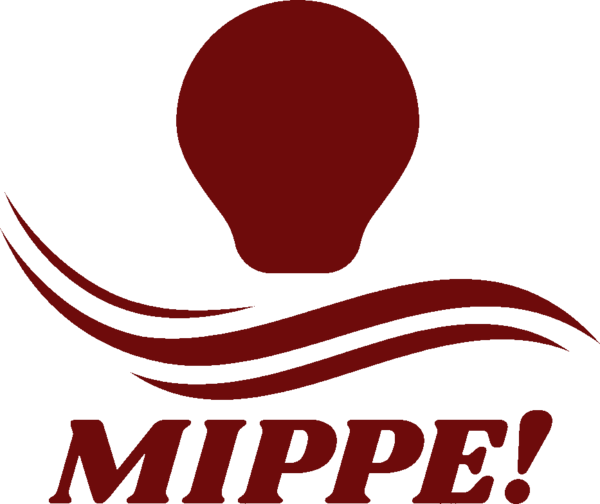
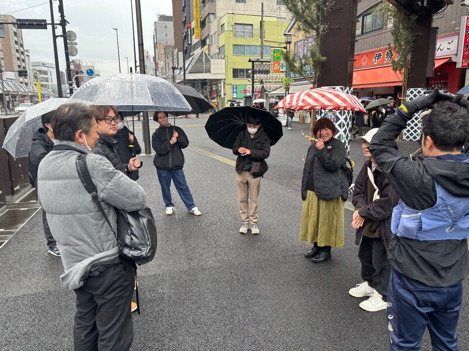
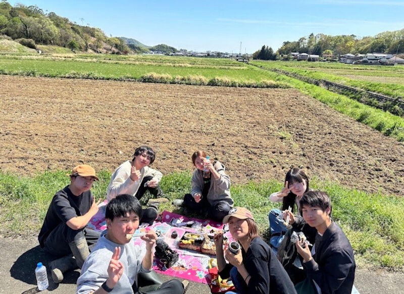
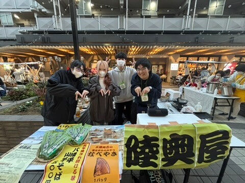

行ってみっぺ 会ってみっぺ やってみっぺ
ガクチカのために、
何かをする…？
「やってみたい」から動く、学生主体の団体。


「やってみたい」から動く、学生主体の団体。
就活で話せる経験がほしい。
実績になることをしたい。
自分の将来に役立つことをしたい。
そんな理由から、地域活動やボランティア、学生団体に参加する学生も少なくありません。
もちろん、それ自体が悪いわけではないよ？
もっと単純でよくないか？
誰かに与えられた「やるべきこと」ではなく、自分自身が「やってみたい」や「ワクワク」を起点に動いてみようよ。
そこから人と繋がって、新しい挑戦が生まれて、気づけば自分だけの経験になってるはず。
実績をつくるために動くのではなく、夢中になって動いたその先に、結果として実績がついてくる。
「みっぺ」は、東北の方言で「〜してみよう」という意味。
まだ知らないまちに行ってみよう。
多様な価値観を持つ人たちと会ってみよう。
まずは、自分の興味や好奇心を行動に移してみよう。
そんな一人ひとりの小さな「みっぺ」から始まる団体です。
「やってみたい」から、
地域を越えて企画をつくる。
MIPPE!は、学生一人ひとりの「やってみたい」や「ワクワク」から、地域を越えてさまざまな企画を生み出している学生主体の団体です。米作りをしたり、中高生の探究に関わったり、地域のお祭りに出店したり、全国各地でイベントを開いたり。
それぞれの企画は、メンバー自身の「面白そう」「やってみたい」という気持ちをエンジンに動いています。そこに仲間が加わり、地域の人が加わり、いつの間にか新しい企画や関係が生まれていく。
「やってみたい」から生まれた企画が、
全国で動いています。


変人（地域を変える人）が、立場を越えて集まる。
現状を変えたい学生・社会人が集まり、対話や共同企画から新しい取り組みの種を生み出す場。少人数の対話会から合宿型イベントまで。
全国各所


お米を作ったり、販売したり。
栃木県佐野市の米農家と一緒に米づくり。今年度からは田んぼを借りて、都内の大学生も巻き込みながら1tを超えるお米を作る予定。ゆくゆくは商品開発も。
栃木県


マルシェに出店したり、運営したり。
屋号「陸奥屋」として、東北の特産品や郷土料理を板橋区のゆりの木商店街などで販売。これまでに4回出店し、売上は活動費に。
東京都内


瀬戸内海の離島で地引網をしたり、海岸清掃をしたり。
里山・里海の環境や生業に関わり、自然と人の暮らしの関係を学びながら、持続可能な地域のあり方を考える。
瀬戸内地方（広島県・岡山県など）
中高生の探究に、大学生が伴走する。
学校の先生方と連携し、中高生の探究学習に大学生が伴走する企画。これまでは学校の正規授業に参加し、探究学習に意欲的な生徒だけでなく、苦手意識を持つ生徒にも寄り添いながら、一緒に考え、学び合う機会をつくってきました。今後は授業時間外にも活動の幅を広げ、生徒一人ひとりの興味や関心を深められる多様な探究プログラムの企画・実施を目指しています。
東京都内

企画が生まれる場をつくる。
オンラインコミュニティIACを運営し、地域や大学を越えて企画の相談や情報共有ができる場に。活動の入口にもなる、MIPPE!の土台です。
オンライン
能登で、想いをつなぐ花火を。
11月28日に石川県珠洲市で開かれる花火イベント「能登 想いをつなぐ FIREWORKS」に、MIPPE!も主催団体の一つとして参加します。高徳花火工場さんとトイレットペッパーズさんが昨年から続けてきたイベントで、MIPPE!は当日の屋台を3店舗企画中。班に分かれて、出店の中身を考えています。花火のあとも、ワークキャンプや変人会議など、能登を舞台にした活動を続けていきます。
石川県珠洲市・奥能登
地域で起きていることを、言葉にして届ける。
活動の記録やインタビュー、記事制作、冊子編集。ただの広報ではなく、活動の振り返りと学びを共有する役割。記事は note で読めます。
「行ってみっぺ・会ってみっぺ・やってみっぺ」から活動スタート。
百合の企画。東北の特産品と郷土料理を販売。これまでに4回出店。
メンバーが集まり、それぞれの「やってみたい」を共有。
社会人6名・学生4名。「どうすれば学生は変人になれるのか？」を輪になって語り合った。
大学生対象、農業の新たな可能性を探る旅。
15名。巣鴨地蔵通り商店街を街歩きして、「学生だから」で終わらない共創関係を考えた。
鹿児島県錦江町に、東京の学生を中心に10名ほどで。
25名。錦江町長や地元高校生も登壇し、「共創は幻想か？」を語り合った。
能登の現地に行って、これからの企画を考えた。
全国の変人が盛岡に集まった。
能登企画。主催団体の一つとして、屋台を3店舗出店。
※ 試作版です。メンバーの写真・名前・役職は、いただいたら入れます。
大学生・高校生、どこに住んでいても大歓迎。
まずは気軽に話を聞きにきてください。